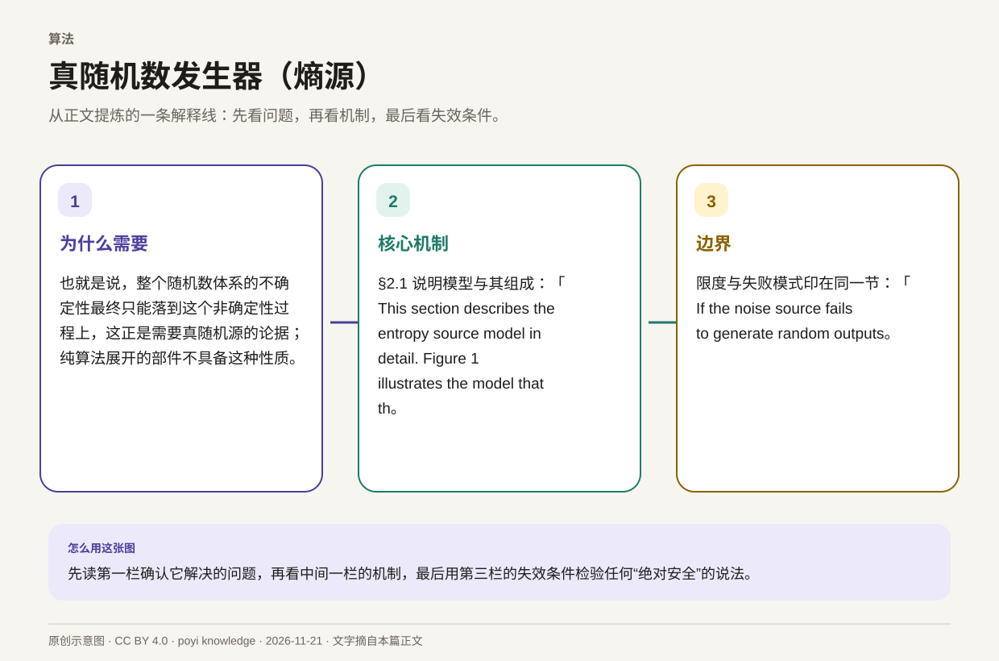
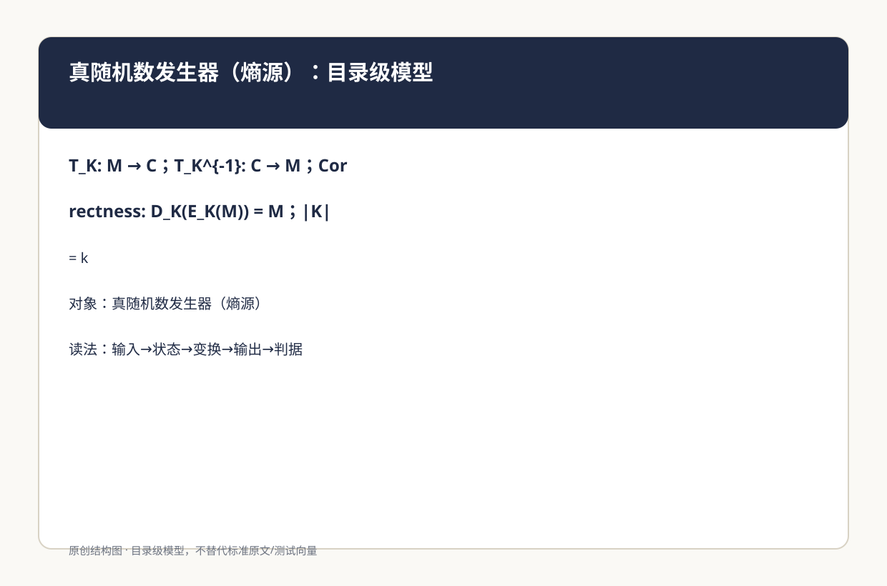

原理与机制
算法：真随机数发生器（True Random Number Generator）。§2.1 说明模型与其组成：「This section describes the entropy source model in detail.Figure 1 illustrates the model that this Recommendation uses to describe an entropy source and its components, which consist of a noise source, an optional conditioning component and a health testi」，即真随机性的来源是被采样的噪声过程。§2.2 给出数字化的位置：「If the non-deterministic activity being sampled produces something other than binary data, the sampling process includes a digitization process that converts the output samples to bits.The output of the digitized noise source is called the raw data.」

为什么重要
必要性由根这一说法给出：「The noise source is the root of security for the entropy source and for the RBG as a whole.This is the component that contains the non-deterministic, entropy-providing process that is ultimately responsible for the uncertainty associated with the bitstrin」。也就是说，整个随机数体系的不确定性最终只能落到这个非确定性过程上，这正是需要真随机源的论据；纯算法展开的部件不具备这种性质。
应用与实例
部署侧的动作由本文件规定。§1.1 指明对象读者：「This Recommendation is intended for use by entropy source developers (the entity that designs and builds the entropy source or a portion thereof), submitters1 (the entity that submits the entropy」。§2.2.3 把守护手段分层：「The health tests can be separated into three categories: start-up tests, continuous tests (primarily on the noise source), and on-demand tests」，即真随机源靠启动检测、连续检测与按需检测三类健康测试来守住，其输出再交给注册机制取用；这份文件通篇把这类装置称作熵源与 NRBG，也即硬件真随机数发生器。

边界与攻击面
限度与失败模式印在同一节：「If the noise source fails to generate random outputs, no other component in the RBG can compensate for the lack of entropy; hence, no security guarantees can be made for the application relying on the RBG.」即健康检测与调节都不能替代噪声本身；这也解释了为什么该文件把样本采集与数字化写成假设条件，其一同句为「This Recommendation assumes that the sample values (i.e., the symbols) obtained from a noise source consist of fixed-length bitstrings」。
历史与背景
版本事实：关键词行印为「Conditioning functions; entropy source; health testing; min-entropy; noise source; predictors; random number generators」，§1 说明对象读者：「This Recommendation is intended for use by entropy source developers (the entity that designs and builds the entropy source or a portion thereof), submitters1 (the entity that submits the entropy」。本留存件为 SP 800-90B（2018 年 12 月）；该条目所属目录行原写（该行的出处标题写作 NIST SP 800-90B，并把年份标成 2007），与留存件日期不符，该年份问题已另列目录更正待办。
逐步示例与核验
形式模型与复算步骤
[C=E_K(P;r),\qquad P=D_K(C)]
真随机数发生器的公开参数、密钥/随机数与消息；变量说明：P 明文，C 密文，K 密钥，r 随机化参数。1.按算法规范编码输入。2.在密钥控制下执行轮函数。3.输出密文并检查长度与格式。边界：公式只覆盖已登记的参数与假设；参数取值、标准版本和实现细节仍以来源为准。
参考出处
- Wikipedia search entry for 真随机数发生器. https://zh.wikipedia.org/w/index.php?search=%E7%9C%9F%E9%9A%8F%E6%9C%BA%E6%95%B0%E5%8F%91%E7%94%9F%E5%99%A8
- Handbook of Applied Cryptography (Menezes, van Oorschot, Vanstone). https://www.cacr.math.uwaterloo.ca/hac/